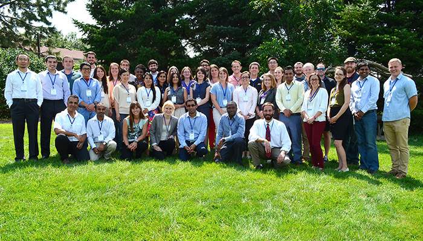

Find us on Twitter
Find us on TwitterNext Generation Scientists
|  |
Graduate students participating in our project work hard to become discipline-based scientists as well as learn how to bridge disciplines and work collaboratively to address complex, societal challenges.
Each graduate student is housed within a Land Grant University and has obligations and expectations within their respective departments and colleges. It is expected that our project's graduate students meet their institutional goals while also participating in this project. (Graduate student photographs and contact information can be found on specific team pages.)
Participation in the project provides exposure to a wide range of scientists, staff, and other students with varied expertise. As a result, this project serves as a platform to facilitate an exchange of ideas and information that is not likely found elsewhere. Students will progress in their comprehension and ability to participate in transdisciplinary work as they advance through their program; the Graduate Student Roadmap (below) is a suggested approach to increasing a student's skills in conducting transdisciplinary work. It is expected MS and PhD students will acquire many of the same skill sets despite the shortened tenure of MS students. A PhD student will simply be able to explore more opportunities and potentially build a greater resume prior to graduating.
Graduate Student Roadmap
This handout provides an overview and framework of the team’s approach to equip graduate students and provide a transdisciplinary experience and opportunities.
Learn about graduate student research...
|
Climate & Ag Research by Next Generation Scientists Summarized in New Booklet
Learn about research being conducted, by our project's graduate students and post doctoral students, in a new booklet now available for viewing online. Prepared for a poster symposium to be held in Washinton, D.C., October 15-16, the booklet contains 31 research summaries, describing the work of some of the next generation, climate and agriculture scientists, who are currently conducting their research with our project, under the supervision of our Principal Investigators and faculty at participating universities. Click on the above image to open and view.
Sustainable Corn BLOGFarmers and scientists in the Corn Belt discussing cover crops, weather, tillage, drainage water managment and much more.
Sustainable Corn YouTube ChannelSUSTAINABLECORN.ORG | Website Administrator |